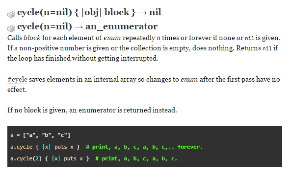

This week in phase0, the main focus was on learning algorithms of Ruby. So in this week's technical blog, we are going to talk about a method that helps in writing Ruby algorithm. The method I picked to talk about is called cycle.
Taking a page out of ruby docs, the following defines how cycle is used.

As you can see, if no integer is used to limit the iterations of the array, the array will duplicate on forever. So it is important to note that when using cycle, always iterate the number of iterations you need for the array.
That is all I'd like to say for the method of cycle. Klvn out.